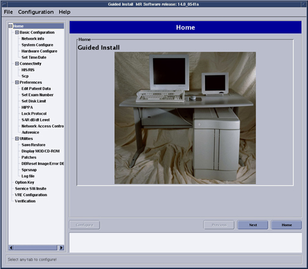
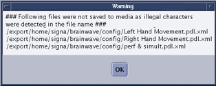

Operating Documentation
Direction 5440001-3, Rev# 6
Signa HDxt Service Methods
Module Version 2.0, Version Date 10/20/09
Operating Documentation |
| Required Persons | Preliminary Reqs | Procedure | Finalization |
|---|---|---|---|
| 1 | 20 mins |
After completing final site configurations, perform a SaveINFO:
From the Common Service Desk Top, open the Guided Install GUI.
Illustration 1: Guided Install GUI

Select the SaveRestore under Utilities. The Save/ Restore window will open.
Illustration 2: Save/ Restore Window

A dialog Box will open asking if MOD or CD/DVD will be used. Insert the media to be used into the drive.
| NOTE: | Beginning December 2009, the MOD drive will be going end-of-life. Please use CD/DVD to complete Save/INFO. |
| NOTE: | Use Verbatim or TDK 48x R CDROM or Verbatim or TDK 2x –R DVD media. |
Make the proper selection in the Dialog Box and Click [Ok].
Illustration 3: Dialog Box

A warning message will appear informing the operator that data on the inserted media will be lost. ( MOD only ).
Illustration 4: Warning Message
Click [Confirm] to Start the SaveInfo procedure.
A SaveInfo & SaveGI in progress message will be displayed.
Illustration 5: Message Window
If some information is not saved a warning message will appear.
Illustration 6: Message Window

Click [Yes] to view the Log.
Illustration 7: Example of Log

| NOTE: | Protocols may fail to save if an illegal character is used in the name. |
SaveInfo is now complete. Remove the MOD or CD/DVD and write the date and time on it.
Exit the install GUI by selecting [File] then [Quit].